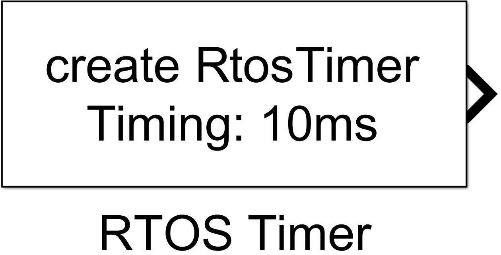
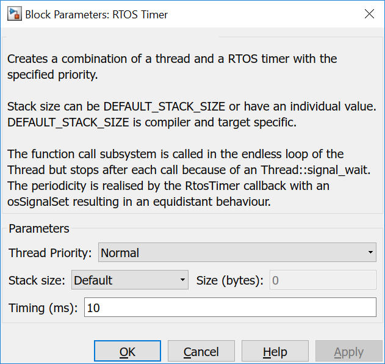
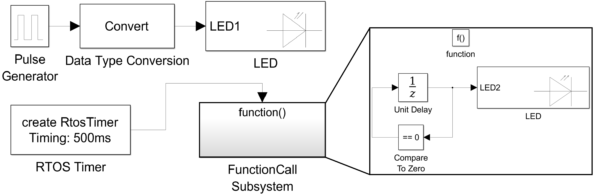

6.3. RTOSTimer
6.3.1. Description
Creates a combination of a thread and a RTOS timer with the specified priority.
Stack size can be DEFAULT_STACK_SIZE or have an individual value. DEFAULT_STACK_SIZE is compiler and target specific.
The function call subsystem is called in the endless loop of the Thread but stops after each call because of an Thread::signal_wait. The periodicity is realised by the RtosTimer callback with an osSignalSet resulting in an equidistant behaviour.
{kind=link}
6.3.2. Data Type Support
The Thread block outputs a signal of type fcn_call.
6.3.3. Parameters and Dialog Box
6.3.3.1. Thread Priority
specifies the thread priority argument for calling the Thread constructor.
- idle (lowest)
- low
- below normal
- normal (default)
- above normal
- high
- realtime (highest)
6.3.3.2. Stack size
specifies the stacksize argument for calling the Thread constructor. Default uses the size defined in mbed, User defined allows to overwrite this value.
6.3.3.3. Size (bytes):
specifies the value of the user defined stack size of this thread.
6.3.3.4. Timing (ms):
A Thread and a RtosTimer are created. The timer creates periodically with a periode of Timing an event. Through the rtos event system the behaviour is equidistant when the loop execution time is smaller than the timer time.
6.3.4. Example
In the example two LEDs are blinking. LED1 is blinking in the same way like in the Blinky example. LED2 is controled by an RtosTimer which executes the function-call subsystem every 500ms.
The period is exactly 500ms.
{kind=link}
6.3.5. Code Generation
Instance names of mbed classes are created by concatenating model name (, submodelnames) and block name (<Model Name>_(<Subblock Name>_…)<Block Name>). Space and minus characters are substituted by underscore (‘_’) characters.
In ert_main.cpp
- two external references
extern void <instance name>_RTOS_Thread_thread();
extern osThreadId <instance name>_Thread_id;
- a functions
void <instance name>_RTOS_Thread_callback()
{
osSignalSet(<instance name>_RTOS_Thread_id, 0x1);
}
- and Thread + RtosTimer instance creation in the main function
RtosTimer <instance name>_RTOS_Thread_timer(callback(<instance name>_RTOS_Thread_callback), osTimerPeriodic);
Thread <instance name>_RTOS_Thread(<Thread Priority>, <Size (bytes)> or DEFAULT_STACK_SIZE);
<instance name>_RTOS_Thread.start(callback(<instance name>_RTOS_Thread_thread));
are created. The timer has to be started explicitly, the Thread is started implicitly by the constructor.
<instance name>_RTOS_Thread_timer.start(<Timing>);
The callback function <instance name>_RTOS_Thread_thread is generated in <Model Name>.cpp.
In <Model Name>.cpp
a global instance
osThreadId <instance name>_Thread_id;
and an own function for the function-call subblock
void <instance name>_RTOS_Thread_thread()
{
<instance name>_RTOS_Thread_id = Thread::gettid();
while (1) {
Thread::signal_wait(0x1,osWaitForever);
// Output and update for function-call system: '<Root>/FunctionCall Subsystem'
{
...
}
}
}
are created.